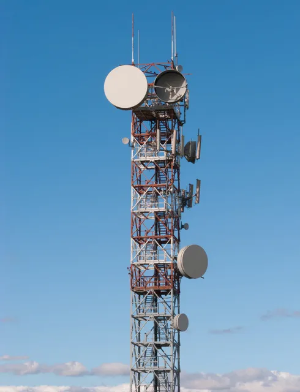

01 / Grandspan EPC
Telecom Infrastructure
EPC support for new telecom sites, rooftop installations, strengthening works and network expansion. The work is safe, cost-effective and compliant with the design standards that apply.

Structures
- Self-supporting lattice towers
- Monopole towers
- Guyed masts
- Rooftop towers and antenna supports
Engineering & assessment
- UK tower design to BS EN 1993-3-1 and UK National Annex, with a proven track record
- Structural analysis to CSA S37-24 and CSA A23.4 where specified
- Stability analysis of existing towers
- Antenna upgrade and loading analysis
- Tower upgrade studies
- Foundation engineering
- Steel and concrete fabrication drawings
Engineering delivered in accordance with applicable BS EN Standards, Eurocodes EN 1990, EN 1991 and EN 1993, and client-specific telecom standards.
Electrical design and engineering support using *Modecsoft software, including electrical calculations, SLDs, earthing and associated documentation.
*In collaboration with specialised software partners.
Fabrication & delivery
Inspection records, as-built documentation, redline updates, and single-site or multi-site handover support.
- BS EN 1090 certified fabrication of legs and bracing
- Panel-wise transport and site installation
- Construction and as-built drawings
- Construction Issue Package (CIP) Projects
- GA / PDWG Drawing Preparation, DD Drawings Using Modecsoft Software
- CAB Swap, SUEZ DD Site Documentation
- Small Cell Projects, Including Traffic Control Plans (TCP)
- Single-site or multi-site handover
BS EN 1993-3-1 experienceBS EN 1090 certified fabricationTNX TowerGuyMasterTS TowerAutoCAD